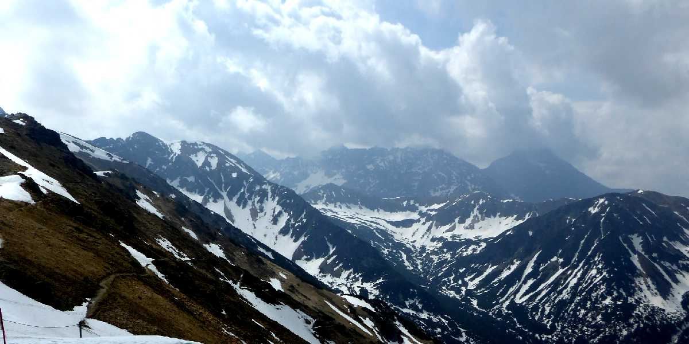
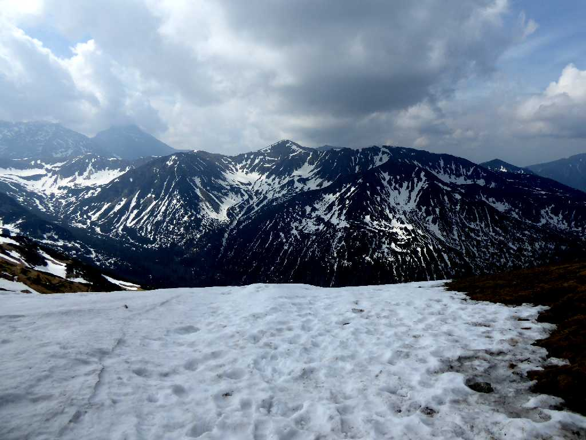
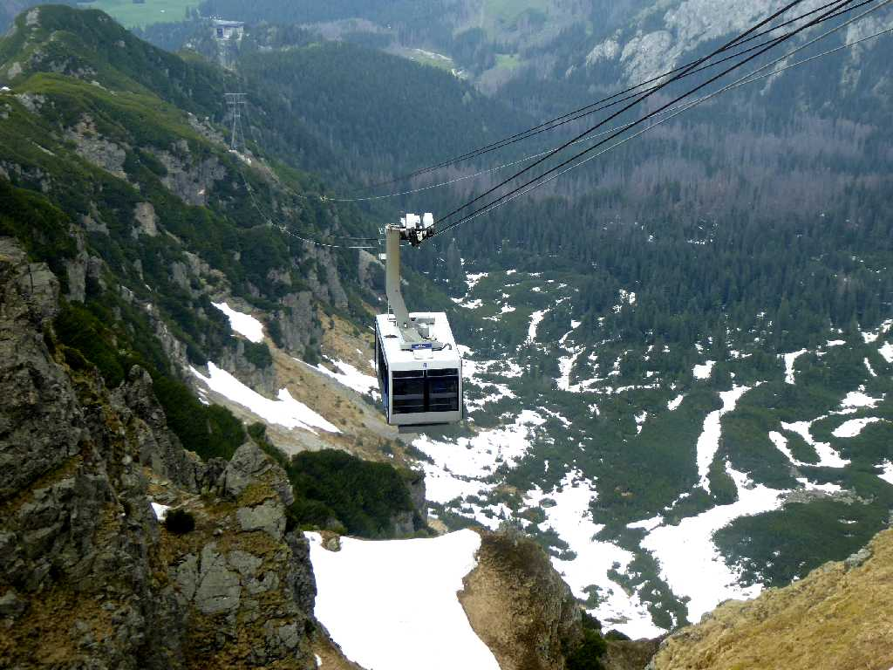
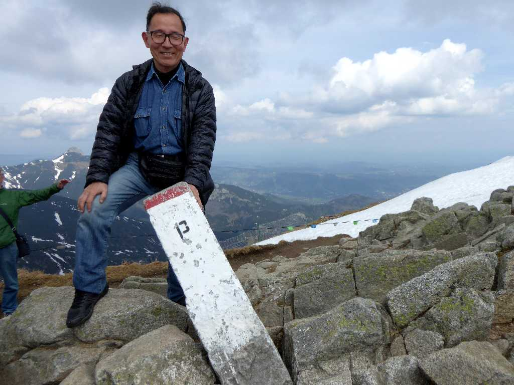
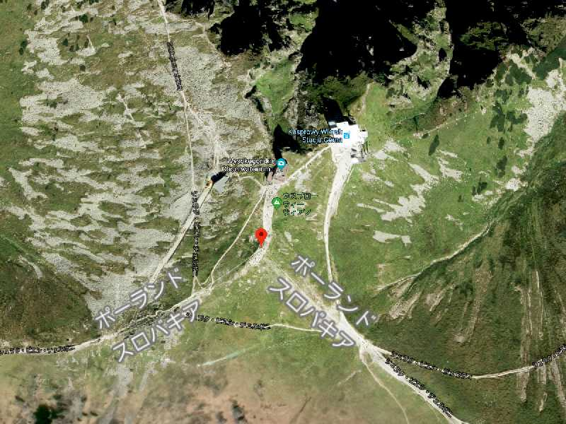

Poland Kasprowy Wierch Tatry Zakopane Slovakia
ポーランドとスロバキアの国境となるタトラ山脈

Tatry Mountains in Slovakia from Poland
ポーランド領よりスロバキア領の山並みを望む

Ropeway Tatry

Slovenia May 27 2019 Border Kasprowy Wierch Tatry Poland
ポーランドとスロバキアの国境にて
